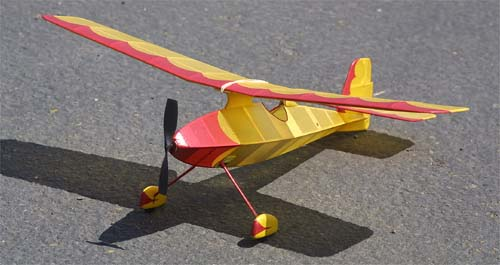
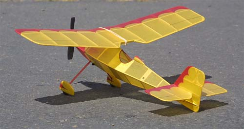
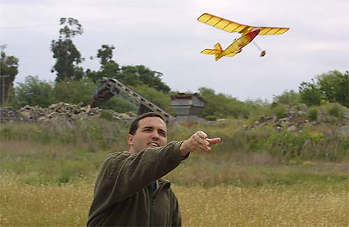
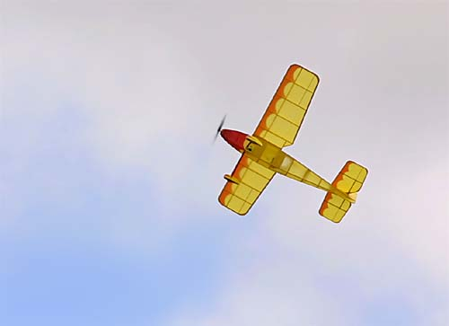

|
This delightful model is an original design by Jason McGuire.
The model was originally built for rubber power from little more than a sketch. It has since been repowered with a Hi-Line Micro-4 motor. Despite being a great flier, the model seems to know just when it is time to quit. It has repeatedly jumped out of rising air when threatened with leaving the field. The answer to the inevitable question, is no. There are not yet plans available for this design. I am pestering Jason for them, and will make them available on my site as soon as possible. Please be patient though. A new baby and other models to build often take precedence over drafting finished plans. For now, enjoy these photos. |




Copyright 2001, Thayer Syme. All rights reserved